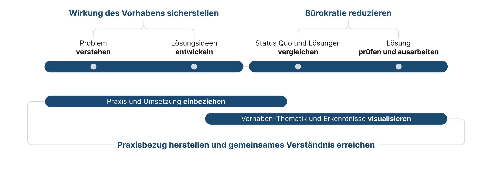

Frühe Phase der Rechtsetzung
Vorhaben adressatenorientiert, bürokratiearm, praxis- und digitaltauglich gestalten.
So gehen Sie in der frühen Phase vor

- Wirkung sicherstellen
- Bürokratie reduzieren
- Praxis einbeziehen
- Visualisieren
Diese Zielsetzungen soll Ihr Vorhaben erreichen
Wirkung des Vorhabens sicherstellen
So gehen Sie vor
Bürokratie reduzieren
So gehen Sie vor
Diese Methoden unterstützen Sie beim Vorgehen
Praxis und Umsetzung einbeziehen
So gehen Sie vor
Vorhaben-Thematik und Erkenntnisse visualisieren
So gehen Sie vor